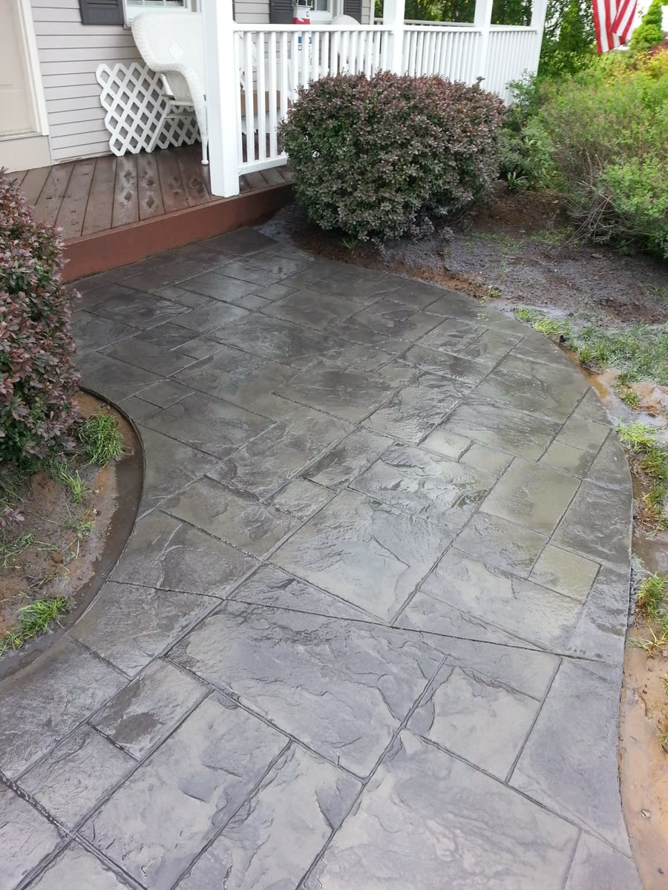
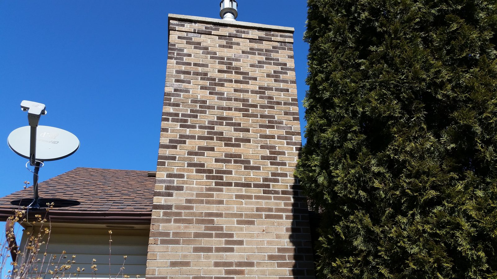
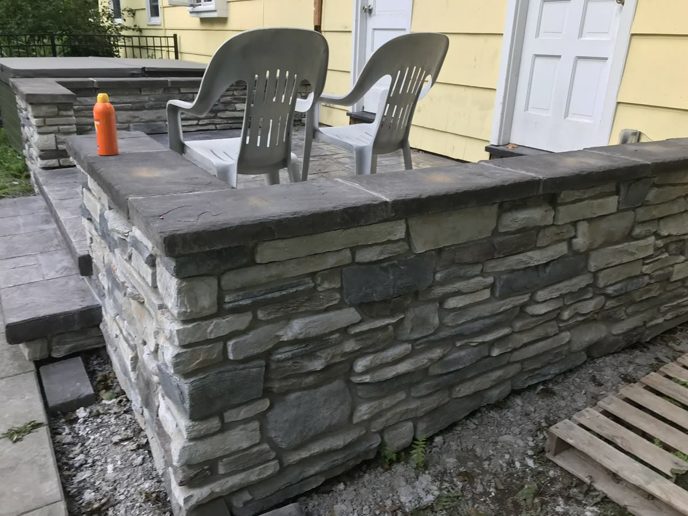
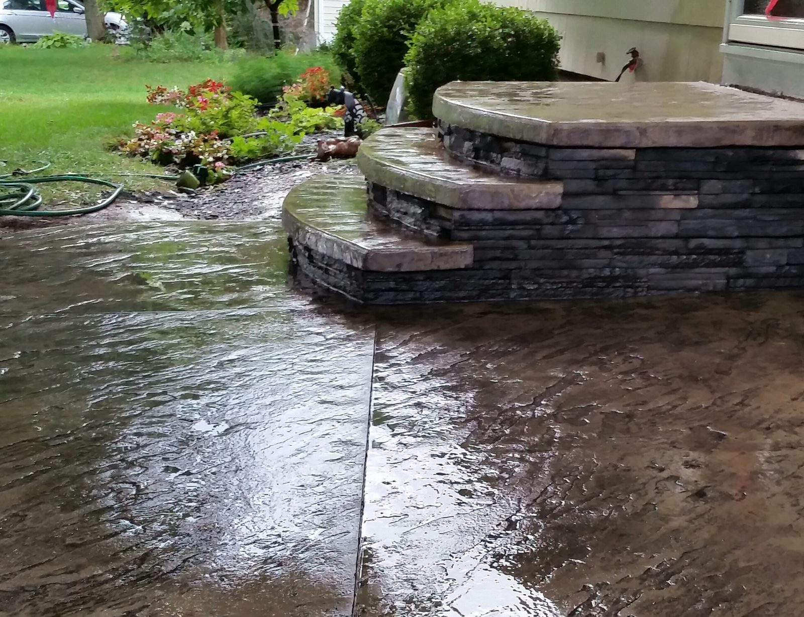
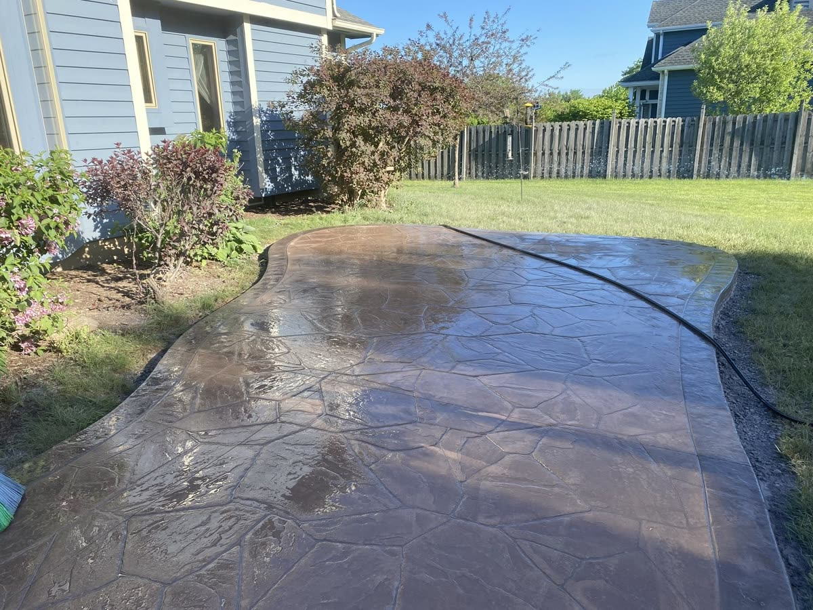
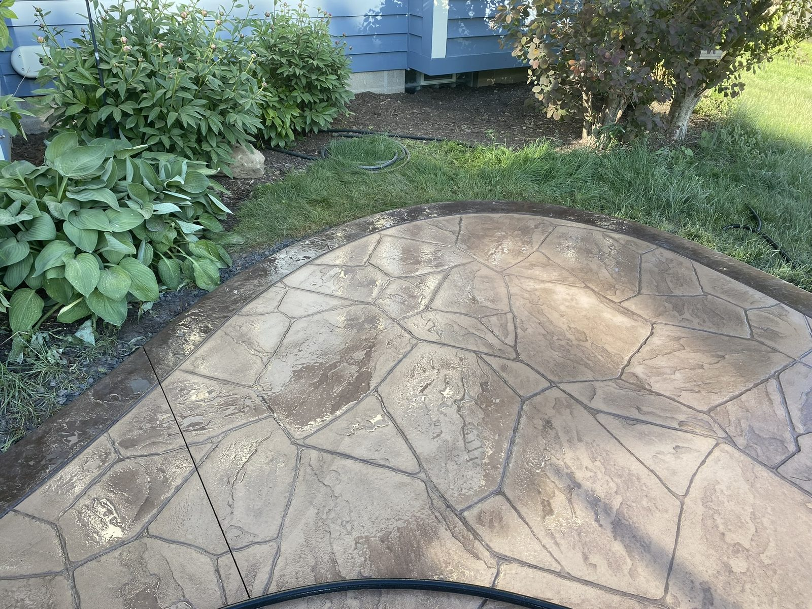
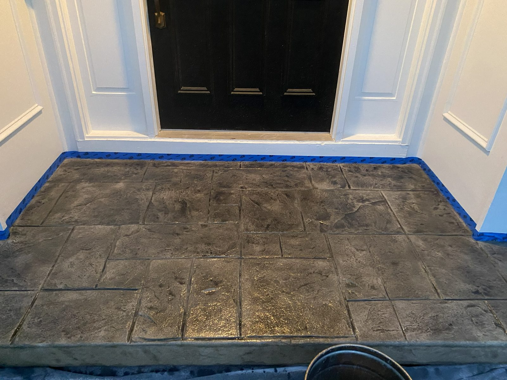
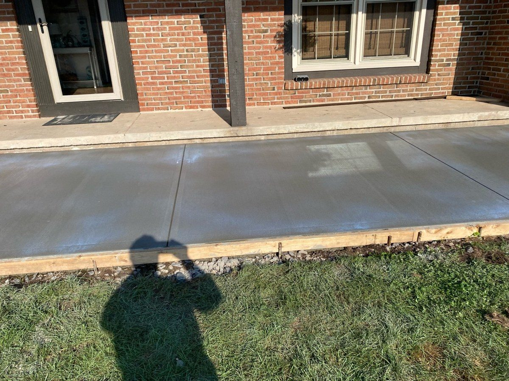
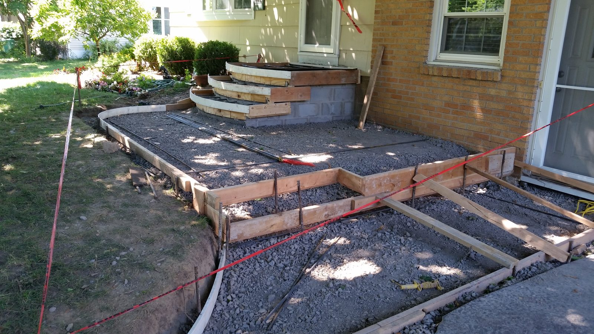
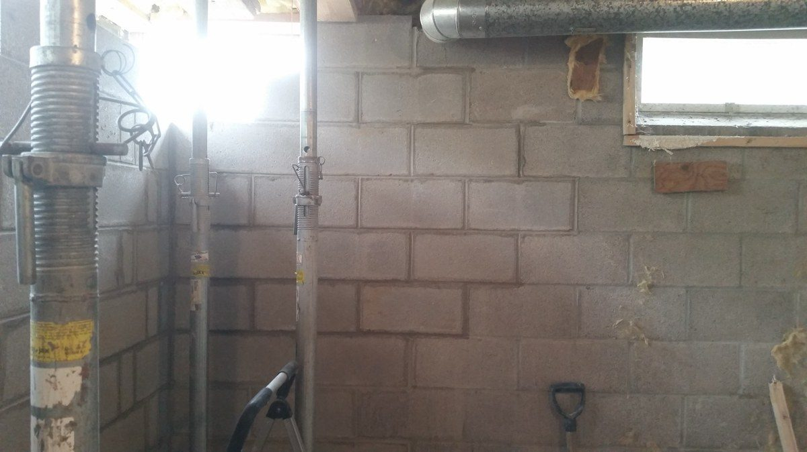

Patios, Walkways & Sidewalks
Where finish and structure meet. Concrete, paver, and stone work built to weather Upstate winters and suit the house.
Patios, walkways, chimney repair, brick and stone work, and structural masonry for homeowners across Rochester, Greece, Irondequoit, Webster, Penfield, Pittsford, Victor, and the surrounding Monroe, Ontario, and Wayne County communities.
No sales crew, no call center, no pressure. Just a straight read on the job and what it actually needs.
Free on-site estimates across Rochester and the surrounding towns


About
With well over three decades in masonry, Don DeManno has earned the reputation of a first-class mason. Keystone Masonry & Construction has been serving the Rochester area for over 11 years, built entirely on referrals from homeowners who trusted us with their property and were happy with the result.
Upstate New York is a severe exposure environment. Freeze-thaw cycles, moisture saturation, and concrete in near-continuous contact with water through the winter months. That's the reality here. Our approach focuses on strength, durability, and structural stability, with curb appeal that holds up as well as it looks. Patios, walkways, and sidewalks are where all of that comes together, and they're the work Don enjoys most.
ACI Certified Concrete Finisher • Journeyman Bricklayer, Bricklayers & Allied Craftworkers • 30+ years experience • 100+ projects completed
Services
From decorative masonry to structural repair, the focus is simple: good work, fair pricing, and results that last across Rochester, Monroe County, and the surrounding towns.
Where finish and structure meet. Concrete, paver, and stone work built to weather Upstate winters and suit the house.
Architectural brick and stone masonry delivering sharp finishes and solid long-term performance for homes across the Rochester area.
Tuckpointing, repointing, and restoration work that helps extend the life of aging brick and stone structures.
Masonry repair for spalling brick, cracked joints, moisture damage, and general structural wear. Chimney repair details →
Structural concrete and masonry work for foundations and repairs involving settling, cracking, and drainage issues. Retaining walls depend on scope, site conditions, and access.
Full driveway demo and concrete replacement for select projects. See a driveway project →
Chimney Repair Rochester NY
Rochester's freeze-thaw cycles are hard on masonry. These are the issues Don sees most often on chimney calls, and most of them are fixable before they turn into a bigger problem.
Brick faces pop off when moisture gets inside and freezes. Once it starts, it spreads. The sooner it's caught, the less of the chimney needs to come down.
The crown is the concrete cap at the top of the chimney. Cracks let water directly into the chimney structure. Freeze-thaw does the rest, and a failed crown is one of the most common reasons chimneys deteriorate faster than they should.
Mortar wears down before the brick does. When joints start to fail, water has a direct path into the chimney. Repointing or tuckpointing handles it early, before it becomes a full-scale repair.
Water coming in around the chimney usually traces back to a failed crown, deteriorated flashing, or cracked joints. Finding the actual source comes first, not just patching the ceiling stain inside.
Rochester averages 30+ freeze-thaw cycles a year. Water sitting in any crack expands when it freezes. Over time it works apart mortar, pushes brick faces off, and can compromise the full chimney stack.
Photo Gallery
A selection of completed projects across Monroe County and the surrounding area. Click any photo to enlarge.








Testimonials
Real feedback from past customers, kept close to the original handwritten wording.
Very professional. Don was always on site and completed the job well ahead of schedule and on budget.
He did a professional job and took his time to make sure everything came out right. Did great work.
Don did outstanding, excellent masonry work.
Process
Don comes out, looks over the property, and gives you a clear picture of what the job actually involves.
You get a straightforward estimate based on scope and materials: no upsell, no corporate runaround.
The project is completed using methods built for durability, appearance, and lasting performance in harsh Upstate conditions.
We walk the finished job together. If something needs attention, it gets addressed.
Free Estimates
A lot of homeowners aren't sure whether something needs repair or whether it can wait. That's exactly the kind of question the estimate is for.
Our Commitment
A track record built job by job, over three decades of masonry work in Rochester.
Every job is made to stand up to real Rochester conditions, not just to look good at first glance. If there's a genuine problem with the workmanship after the job is done, Don comes back and addresses it. That's not a blank-check promise, and it's not a runaround either. It's honest accountability for the quality of the work, the same way this business has operated for over 30 years.
Contact
If you're dealing with damaged masonry, chimney issues, a failing retaining wall, or a concrete project, give Don a call. You'll get a free on-site estimate and a clear explanation of what the work involves.
That's Don's direct inbox.
Questions
Most people just want to know what they're looking at, what actually needs to be done, and whether the problem can wait. That's the conversation.
Look for cracked mortar joints, spalling or flaking brick, water stains inside near the chimney, or any visible leaning or shifting. If you're seeing loose mortar, brick faces popping off, or cracks in a retaining wall, those are signs the masonry is failing. Don can come out and give you a straight read on whether it needs repair now or whether the problem can wait.
Yes. Call 585-490-1600 and Don will schedule a time to come out and look at the job. The estimate is free, there's no obligation, and there's no sales pitch — just a straightforward explanation of what the work involves.
Yes. We serve homeowners across Monroe County, Ontario County, and Wayne County — including Greece, Irondequoit, Brighton, Webster, Penfield, Victor, Canandaigua, Newark, and surrounding communities.
Mortar crumbling out of joints. Brick faces popping off. Cracks that keep getting wider every spring. That's freeze-thaw. Water gets in, freezes, expands, and breaks things apart from the inside. Rochester gets 30-plus cycles a year, so it adds up fast. The stuff that looks minor in October can be a real problem by April.
Most people use "tuckpointing" when they really mean repointing. Repointing is grinding out the bad mortar and packing in new — that's the actual repair. Tuckpointing is more of a cosmetic technique with two mortar colors to clean up the look of the joints. Don can take one look at your mortar and tell you which one you actually need.
Usually not for basic repairs like repointing or swapping out a few bricks. If it's structural — rebuilding a chimney, a new retaining wall, foundation work — most towns in Monroe, Ontario, and Wayne County will want a permit. It varies by municipality. If you're not sure, ask Don when he comes out. He'll know.
Once it's warm enough that mortar won't freeze before it cures. That's roughly May through October around here. If you spot a problem in January, still call — Don can take a look and get you on the schedule for when the weather cooperates.
Depends on how deep the damage goes. Cracked mortar, a few bad bricks, surface-level stuff — that's a repair. If the wall is leaning, the foundation is moving, or the damage goes all the way through, you're probably looking at a rebuild. Don's not going to push a rebuild if a repair will hold. He'll tell you straight.
Take a walk around the house once the snow melts. Look at the mortar joints — anything crumbled or missing? Any brick faces that popped off over the winter? Cracks wider than they were in the fall? Check for water stains inside near the chimney or basement walls too. If something looks off, it's cheaper to deal with it now than after another winter.